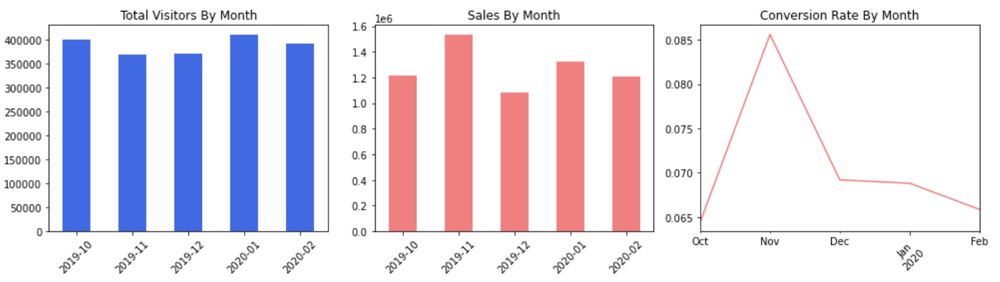

Leveraging RFM model and KMeans clustering for tailored strategies
Data Source
eCommerce Events History in Cosmetics Shop_kaggle
The provided dataset encompasses behavior data spanning five months (Oct 2019 - Feb 2020) from a medium-sized cosmetics online store.
Table of Contents
1. Business Problem
The business is facing a significant challenge in driving sales growth and improving the conversion rate. To address this pain point, the objective is to build personalized marketing campaigns based on different types of customers, determined by their behaviors. By segmenting customers and understanding their unique characteristics, targeted strategies can be implemented to enhance sales performance and increase the conversion rate.
2. Objectives
This analysis aims to achieve the following objectives:
- Assess the overall performance and trends of the business.
- Segment customers based on their historical records.
- Identify the patterns and characteristics of each customer segment.
- Determine the peak traffic periods to inform future marketing strategies.
3. Methodology
The analysis in this report was conducted using Jupyter Notebook and implemented in Python.
- Libraries used: Pandas | NumPy | Matplotlib | Seaborn | Scikit-learn
- Techniques/Models applied: Data Analysis | KMeans Clustering | RFM Model | Data Visualization
4. Data Analysis
The following outline provides a concise summary of the analysis, highlighting the essential steps and key findings. To view the complete code, please click here for ipynb file.
4-1 Data Preprocessing
- Import libraries
- Read and concatenate datasets of 5 months
- View the first 5 & the last 5 rows of the dataset
- Check the size of the data and the data types of all columns
- Convert 'event_time' to DateTime format
- Check & handle NA values
- Dropping irrelevant columns
- Explore numeric variable 'price' & fix the abnormal values
- View the unique values count of all columns
- Create a sub dataset df_sales in order to calculate sales easily
4-2 E-commerce Performence Exploration
- Find out the traffic and sales trend
- Find out the monthly traffic, sales and conversion rate 
- Find out the peak time of the traffic
- Calculate cart abandonment rate (incompleted transactions/purchases)
- Calculate the average order value
Note:
In February, all key metrics including traffic, sales, and conversion rate declined compared to the previous month. These metrics have shown no significant increases over the past five months, except for a seasonal peak in November. This serves as a warning signal.
Note:
The heatmap effectively addressed objective 4 by identifying the peak traffic periods, providing valuable information for informing future marketing strategies.
4-3 RFM Calculation
The RFM model is based on three quantitative factors:
- Recency: How recently a customer has made a purchase
- Frequency: How often a customer makes a purchase
- Monetary value: How much money a customer spends on purchases
Source: Investopedia. (2022, November 19). RFM (Recency, Frequency, Monetary Value)
- Calculate 'recency' by month: set 2020 Feb as the reference month, label the user's most recent purchase month as follows: if the user's most recent purchase month is February, it is labeled as '0', and if it is January, it is labeled as '1'
- Calculate 'frequency' by counting the total number of sessions a user has had in the span of 5 months
- Calculate 'monetary' value by summing the total amount a user has spent in the span of 5 months
- Remove outliers & plot the distribution of RFM
4-4 KMeans Clustering using RFM
- Standardize RFM data
- Determine the optimal cluster size using the elbow method, and adjust if necessary to align with the project's objectives
- Apply the KMeans clustering algorithm and generate a scatter plot to visualize the results
- Find out the mean values of each cluster
- Renaming clusters according to their specific behaviors and features as follow:
- Find out the proportion of each cluster and plot the clusters' mean values of RFM
| Cluster No. | Features | Label as |
|---|---|---|
| 0 | customers with relatively recent activity, moderate frequency, and high monetary value | Potential High-Value Customer |
| 1 | customers who have made recent purchases with low frequency and low monetary value | New Customers |
| 2 | customers who made a purchase in the past but are now inactive | Dormant Customers |
| 3 | customers who have shopped recently and exhibit high frequency and high monetary value | Loyal Customers |

Note:
The proportions of the two profitable segments, Potential High-Value Customers and Loyal Customers, are relatively low. On the other hand, the proportion of Dormant Customers is relatively high. The primary objective of the business is to decrease the proportion of Dormant Customers.
4-5 Random Sampling and Pattern Observation for Clustering Validation
- Combine the cluster data with the original dataframe to analyze and observe distinct trends among the clusters
- Find out the cart abandonment rate by cluster
- Calculate average order value by cluster
- Plot the distribution of active months by cluster
- Take random 30 samples from each cluster to observe their behavior records

4-6 Insights
- Dormant customers represent approximately one-third of the total customer base. Upon analyzing the sample records and observing a mean frequency of 1.06, it is evident that most dormant customers are one-time purchasers. This highlights a significant challenge for the business in terms of customer retention.
- Loyal customers exhibit a high purchase frequency and generate substantial sales, making them a valuable segment for any business. However, it is noteworthy that their cart abandonment rate is the highest among all clusters. This could be attributed to a higher number of products being added to the cart compared to other clusters.
- New customers account for nearly half of all customers, which is a positive sign if the business is performing well. However, based on the observed traffic and sales trends, it is evident that the business struggles to retain a significant portion of new customers.
- Potential high-value customers represent another profitable and stable cluster that requires attention. They exhibit the lowest cart abandonment rate and the highest average order values. It is essential to monitor the frequency of this cluster over a longer period to determine whether their shopping habits remain consistent or if their interest starts to decline.
5. Recommendations
Based on the insights, here are some tailored recommendations:
- Conduct a customer survey: It is recommended to conduct a customer survey targeting dormant customers. Offer incentives such as free samples or discounts to encourage their participation. Through the survey, gather insights into their reasons for not shopping with the business anymore. This information can help identify areas of improvement and develop targeted strategies to win back their engagement.
- Re-engage new customers: Send limited-time discount offers or exclusive promotions to new customers who have been inactive for a certain period, such as 20 days. By providing enticing incentives, the business can encourage these customers to make repeat purchases and increase their level of engagement.
- Nurture potential high-value customers: Pay special attention to potential high-value customers who show promising purchase behavior. Implement personalized marketing strategies, such as tailored product recommendations or exclusive perks, to maintain their interest and loyalty. Monitor their shopping habits over time to ensure they remain engaged and satisfied with their experience.